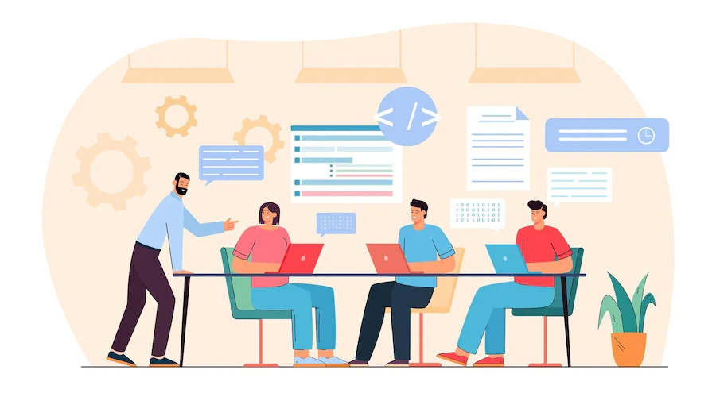
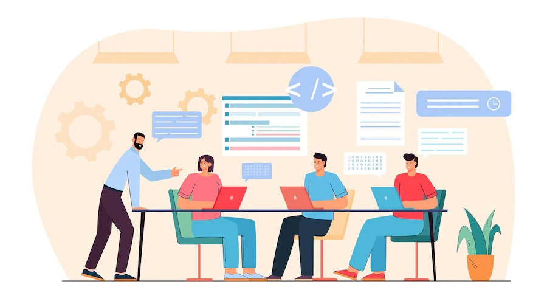

WPROWADZENIE
Współczesny świat idzie do przodu w bardzo szybkim tempie i czasem trzeba się naprawdę natrudzić, żeby być na bieżąco ze wszystkimi nowinkami. To przede wszystkim wygoda i ułatwienie życia poprzez zastosowanie ich w domu i miejscu pracy.
 
 
 W domu przyda się automatyczny wyłącznik świateł, automatyczny zraszacz do trawnika, mikser z wieloma funkcjami, nowoczesne żelazko, które samo dopasowuje program do prasowanego ubrania. Nowoczesne technologie sprawdzają się również w miejscach pracy - nowoczesne komputery i urządzenia biurowe znacznie przyspieszają czas pracy i poprawiają jej jakość. Czy nowoczesne technologie wpływają na nasze życie? Oczywiście i to praktycznie cały czas. Mają wpływ na nasz styl życia, pracę oraz oczywiście relacje z innymi ludźmi. Nie da się ukryć, że ułatwiają nasze życie, czynią je wygodniejszym, bezpieczniejszym, łatwiejszym.
W domu przyda się automatyczny wyłącznik świateł, automatyczny zraszacz do trawnika, mikser z wieloma funkcjami, nowoczesne żelazko, które samo dopasowuje program do prasowanego ubrania. Nowoczesne technologie sprawdzają się również w miejscach pracy - nowoczesne komputery i urządzenia biurowe znacznie przyspieszają czas pracy i poprawiają jej jakość. Czy nowoczesne technologie wpływają na nasze życie? Oczywiście i to praktycznie cały czas. Mają wpływ na nasz styl życia, pracę oraz oczywiście relacje z innymi ludźmi. Nie da się ukryć, że ułatwiają nasze życie, czynią je wygodniejszym, bezpieczniejszym, łatwiejszym.